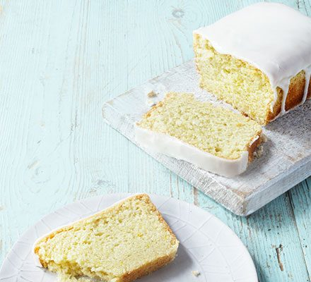

Vegan Lemon Cake Recipe

A vegan version of the simple and timeless lemon cake. Moist, light and zingy, the perfect treat.
Go back
Ingredients
Sponge
- 100ml vegetable oil, plus extra for the tin
- 275g self-raising flour
- 200g golden caster sugar
- 1 tsp baking powder
- 1 lemon, zested, 1/2 juiced
Icing
- 150g icing sugar
- ½ lemon, juiced
Instructions
- Heat oven to 200C/180C fan/gas 6. Oil a 1lb loaf tin and line it with baking parchment. Mix the flour, sugar, baking powder and lemon zest in a bowl. Add the oil, lemon juice and 170ml cold water, then mix until smooth.
- Pour the mixture into the tin. Bake for 30 mins or until a skewer comes out clean. Cool in the tin for 10 mins, then remove and transfer the cake to a wire rack to cool fully.
- For the icing, sieve the icing sugar into a bowl. Mix in just enough lemon juice to make an icing thick enough to pour over the loaf (if you make the icing too thin, it will just run off the cake).
Picture and recipe courtesy of BBC Good Food